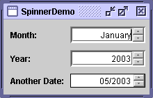

Feedback Form
|
|
Start of Tutorial > Start of Trail > Start of Lesson |
Search
Feedback Form |
Release 1.4 introduced a new component called JSpinner. Spinners are similar to combo boxes
and lists
A spinner is a compound component with three subcomponents: two small buttons and an editor. The editor can be any
JComponent, but by default is implemented as a panel that contains a formatted text field. The spinner's possible and current values are managed by its model.Here's a picture of an application named SpinnerDemo that has three spinners used to specify dates:
 The code for the main class is inSpinnerDemo.java. The Month spinner displays the name of the first month in the user's locale. The possible values for this spinner are specified using an array of strings. The Year spinner displays one of a range of integers, initialized to the current year. The Another Date spinner displays one in a range of
Dates (initially the current date) in a custom format that shows just the month and year. You might notice that the edges of the Another Date spinner look different from those of the spinners above it. This is because the example customizes the border of both that spinner and the formatted text field inside it.
Try this:
- Run SpinnerDemo using JavaTM Web Start
- With the Month spinner, use the arrow buttons or keys to cycle forward and backward through the possible values.
Note the the lowest value is the first month of the year (for example, January) and the highest is the last (for example, December). The exact values depend on your locale. Also note that the values do not cycle — you can't use the up-arrow button or key to go from December directly to January. This is because the standard spinner models don't support cycling.- Type in a valid month name for your locale — for example, July.
Note that the spinner automatically completes the month name.- Moving on to the Year spinner, try typing a year over 100 years ago — for example, 1800 — and then click or tab to move the focus out of the spinner.
Because this program restricts the spinner's model to numbers within 100 years of the current year, 1800 is invalid. When the focus moves out of the spinner, the displayed text changes back to the last valid value.- Moving to the Another Date spinner, use the arrow buttons or keys to change the date.
Note that, by default, the first part of the date — in this case, the month number — changes. You can change which part changes by clicking or using the arrow keys to move to another part of the date.To create a spinner, you generally create its model and then pass the model into the
JSpinnerconstructor. For example:The rest of this section covers the following topics:String[] monthStrings = getMonthStrings(); //get month names SpinnerListModel monthModel = new SpinnerListModel(monthStrings); JSpinner spinner = new JSpinner(monthModel);
The Swing API provides three spinner models:
- SpinnerListModel
- A spinner model whose values are defined by an array of objects or a
List. SpinnerDemo's Month spinner uses this model, initialized with an array derived from the value returned by thegetMonthsmethod ofjava.text.DateFormatSymbols. SeeSpinnerDemo.java- SpinnerNumberModel
- Supports sequences of numbers, which can be expressed as
doubles,ints, orNumbers. You can specify the minimum and maximum allowable values, as well as the step size — the amount of each increment or decrement. The Year spinner uses this model, created with the following code:SpinnerModel model = new SpinnerNumberModel(currentYear, //initial value currentYear - 100, //min currentYear + 100, //max 1); //step- SpinnerDateModel
- Supports sequences of
Dateobjects. You can specify the minimum and maximum dates, as well as the field (such asCalendar.YEAR) to increment or decrement. Note, however, that some look and feels ignore the specified field, and instead change the field that appears selected. The Another Date spinner uses this model, created with the following code:Date initDate = calendar.getTime(); calendar.add(Calendar.YEAR, -100); Date earliestDate = calendar.getTime(); calendar.add(Calendar.YEAR, 200); Date latestDate = calendar.getTime(); model = new SpinnerDateModel(initDate, earliestDate, latestDate, Calendar.YEAR);When you set the spinner's model, the spinner's editor is automatically set. The Swing API provides an editor class corresponding to each of the three model classes listed above. These classes — JSpinner.ListEditor
JSpinner.DefaultEditorinstance with an uneditable formatted text field.
To change the formatting used in a standard spinner editor, you can create and set the editor yourself. Another approach, which requires a little more code but gives you more options when using a default editor, is to get the editor's formatted text field and invoke methods on it.
The
JSpinner.NumberEditorandJSpinner.DateEditorclasses have constructors that allow you to create an editor that formats its data a particular way. For example, the following code sets up the Another Date spinner so that instead of using the default date format, which is long and includes the time, it shows just the month and year in a compact way.spinner.setEditor(new JSpinner.DateEditor(spinner, "MM/yyyy"));
Note: You can play with date formats by running ComboBoxDemo2 using Java Web StartIf you wish to invoke methods directly on the formatted text field — to set its horizontal alignment, for example — you can get it using the
getTextFieldmethod defined inJSpinner.DefaultEditor. Note that the Swing-provided editors aren't themselves formatted text fields. Instead, they'reJPanels that contain a formatted text field. Here is an example of getting and invoking methods on the editor's formatted text field://Tweak the spinner's formatted text field. ftf = getTextField(spinner); if (ftf != null ) { ftf.setColumns(8); //specify more width than we need ftf.setHorizontalAlignment(JTextField.RIGHT); } ... public JFormattedTextField getTextField(JSpinner spinner) { JComponent editor = spinner.getEditor(); if (editor instanceof JSpinner.DefaultEditor) { return ((JSpinner.DefaultEditor)editor).getTextField(); } else { System.err.println("Unexpected editor type: " + spinner.getEditor().getClass() + " isn't a descendant of DefaultEditor"); return null; } }
If the existing spinner models or editors don't meet your needs, you can create your own.The easiest route to creating a custom spinner model is to create a subclass of an existing
AbstractSpinnerModelsubclass that already does most of what you need. An alternative is to implement your own class by extendingAbstractSpinnerModelThe following subclass of
SpinnerListModelimplements a spinner model that cycles through an array of objects. It also lets you specify a second spinner's model to be updated whenever the cycle begins again. For example, if the array of objects is a list of months, the linked model could be for a spinner that displays the year. When the month flips over from December to January the year is incremented. Similarly, when the month flips back from January to December the year is decremented.public class CyclingSpinnerListModel extends SpinnerListModel { Object firstValue, lastValue; SpinnerModel linkedModel = null; public CyclingSpinnerListModel(Object[] values) { super(values); firstValue = values[0]; lastValue = values[values.length - 1]; } public void setLinkedModel(SpinnerModel linkedModel) { this.linkedModel = linkedModel; } public Object getNextValue() { Object value = super.getNextValue(); if (value == null) { value = firstValue; if (linkedModel != null) { linkedModel.setValue(linkedModel.getNextValue()); } } return value; } public Object getPreviousValue() { Object value = super.getPreviousValue(); if (value == null) { value = lastValue; if (linkedModel != null) { linkedModel.setValue(linkedModel.getPreviousValue()); } } return value; } }The
CyclingSpinnerListModelmodel is used for the Month spinner in SpinnerDemo2, an example that is almost identical to SpinnerDemo. You can run SpinnerDemo2 using Java Web StartAs we mentioned before, if you implement a spinner model that does not descend from
SpinnerListModel,SpinnerNumberModel, orSpinnerDateModel, then the spinner's default editor is an uneditable instance ofJSpinner.DefaultEditor. As you've already seen, you can set the editor of a spinner by invoking thesetEditormethod on the spinner after the spinner's model property has been set. An alternative to usingsetEditoris to create a subclass ofJSpinnerand override itscreateEditormethod so that it returns a particular kind of editor whenever the spinner model is of a certain type.In theory at least, you can use any
JComponentas an editor. Possibilities include using a subclass of a standard component such asJLabel, or a component you've implemented from scratch, or a subclass ofJSpinner.DefaultEditor. The only requirements are that the editor must be updated to reflect changes in the spinner's value, and it must have a reasonable preferred size. The editor should generally also set its tool tip text to whatever tool tip text has been specified for the spinner. An example of implementing an editor is in the next section.
You can detect that a spinner's value has changed by registering a change listener on either the spinner or its model. Here's an example of implementing such a change listener. It's from SpinnerDemo3, which is based on SpinnerDemo and uses a change listener to change the color of some text to match the value of the Another Date spinner. You can try it out by running SpinnerDemo3 using Java Web StartThe following example implements an editor, which has a change listener so that it can reflect the spinner's current value. This particular editor displays a solid color of gray, ranging anywhere from white to black. You can try it out by running SpinnerDemo4 using Java Web Startpublic class SpinnerDemo3 extends JPanel implements ChangeListener { protected Calendar calendar; protected JSpinner dateSpinner; ... public SpinnerDemo3() { ... SpinnerDateModel dateModel = ...; ... setSeasonalColor(dateModel.getDate()); //initialize color //Listen for changes on the date spinner. dateSpinner.addChangeListener(this); ... } public void stateChanged(ChangeEvent e) { SpinnerModel dateModel = dateSpinner.getModel(); if (dateModel instanceof SpinnerDateModel) { setSeasonalColor(((SpinnerDateModel)dateModel).getDate()); } } protected void setSeasonalColor(Date date) { calendar.setTime(date); int month = calendar.get(Calendar.MONTH); JFormattedTextField ftf = getTextField(dateSpinner); if (ftf == null) return; //Set the color to match northern hemisphere seasonal conventions. switch (month) { case 2: //March case 3: //April case 4: //May ftf.setForeground(SPRING_COLOR); break; ... default: //December, January, February ftf.setForeground(WINTER_COLOR); } } ... }...//Where the components are created: JSpinner spinner = new JSpinner(new GrayModel(170)); spinner.setEditor(new GrayEditor(spinner)); class GrayModel extends SpinnerNumberModel { ... } class GrayEditor extends JLabel implements ChangeListener { public GrayEditor(JSpinner spinner) { setOpaque(true); ... //Get info from the model. GrayModel myModel = (GrayModel)(spinner.getModel()); setBackground(myModel.getColor()); spinner.addChangeListener(this); ... updateToolTipText(spinner); } protected void updateToolTipText(JSpinner spinner) { String toolTipText = spinner.getToolTipText(); if (toolTipText != null) { //JSpinner has tool tip text. Use it. if (!toolTipText.equals(getToolTipText())) { setToolTipText(toolTipText); } } else { //Define our own tool tip text. GrayModel myModel = (GrayModel)(spinner.getModel()); int rgb = myModel.getIntValue(); setToolTipText("(" + rgb + "," + rgb + "," + rgb + ")"); } } public void stateChanged(ChangeEvent e) { JSpinner mySpinner = (JSpinner)(e.getSource()); GrayModel myModel = (GrayModel)(mySpinner.getModel()); setBackground(myModel.getColor()); updateToolTipText(mySpinner); } }
The following tables list some of the commonly used API for using spinners. If you need to deal directly with the editor's formatted text field, you should also see The FormattedTextField API. Other methods you might use are listed in the API tables in The JComponent Class.
- Classes Related to Spinners
- Useful JSpinner Constructors and Methods
- Useful Editor Constructors and Methods
- SpinnerListModel Methods
- SpinnerDateModel Methods
- SpinnerNumberModel Methods
Classes Related to Spinners Class or Interface Purpose JSpinnerA single-line input field that allows the user to select a number or object value from an ordered sequence. SpinnerModelThe interface implemented by all spinner models. AbstractSpinnerModelThe usual superclass for spinner model implementations. SpinnerListModelA subclass of AbstractSpinnerModelwhose values are defined by an array or aList.SpinnerDateModelA subclass of AbstractSpinnerModelthat supports sequences ofDates.SpinnerNumberModelA subclass of AbstractSpinnerModelthat supports sequences of numbers.JSpinner.DefaultEditorImplements an uneditable component that displays the spinner's value. Subclasses of this class are generally more specialized (and editable). JSpinner.ListEditorA subclass of JSpinner.DefaultEditorwhose values are defined by an array or aList.JSpinner.DateEditorA subclass of JSpinner.DefaultEditorthat supports sequences ofDates.JSpinner.NumberEditorA subclass of JSpinner.DefaultEditorthat supports sequences of numbers.
Useful JSpinner Constructors and Methods Constructor or Method Purpose JSpinner()
JSpinner(SpinnerModel)Create a new JSpinner. The no-argument constructor creates a spinner with an integerSpinnerNumberModelwith an initial value of 0 and no minimum or maximum limits. The optional parameter on the second constructor allows you to specify your ownSpinnerModel.void setValue(java.lang.Object)
Object getValue()Set or get the currently displayed element of the sequence. Object getNextValue()
Object getPreviousValue()Get the object in the sequence that comes after or before the object returned by getValue.SpinnerModel getModel()
void setModel(SpinnerModel)Get or set the spinner's model. JComponent getEditor()
void setEditor(JComponent)Get or set the spinner's editor, which is often an object of type JSpinner.DefaultEditor.protected JComponent createEditor(SpinnerModel)Called by the JSpinnerconstructors to create the spinner's editor. Override this method to associate an editor with a particular type of model.
Useful Editor Constructors and Methods Constructor or Method Purpose JSpinner.NumberEditor(JSpinner, String)Create a JSpinner.NumberEditorinstance that displays and allows editing of the number value of the specified spinner. The string argument specifies the format to use to display the number. See the API documentation for DecimalFormatJSpinner.DateEditor(JSpinner, String)Create a JSpinner.DateEditorinstance that displays and allows editing of theDatevalue of the specified spinner. The string argument specifies the format to use to display the date. See the API documentation for SimpleDateFormatJFormattedTextField getTextField()
(defined inJSpinner.DefaultEditor)Get the formatted text field that provides the main GUI for this editor.
SpinnerListModel Methods Method Purpose void setList(List)
List getList()Set or get the Listthat defines the sequence for this model.
SpinnerDateModel Methods Method Purpose void setValue(Object)
Date getDate()
Object getValue()Set or get the current Datefor this sequence.void setStart(Comparable)
Comparable getStart()Set or get the first Datein this sequence. Usenullto specify that the spinner has no lower limit.void setEnd(Comparable)
Comparable getEnd()Set or get the last Datein this sequence. Usenullto specify that the spinner has no upper limit.void setCalendarField(int)
int getCalendarField()Set or get the size of the date value increment used by the getNextValueandgetPreviousValuemethods. This property is not used when the user explicitly increases or decreases the value; instead, the selected part of the formatted text field is incremented or decremented. The specified parameter must be one of the following constants, defined inCalendar:ERA,YEAR,MONTH,WEEK_OF_YEAR,WEEK_OF_MONTH,DAY_OF_MONTH,DAY_OF_YEAR,DAY_OF_WEEK,DAY_OF_WEEK_IN_MONTH,AM_PM,HOUR_OF_DAY,MINUTE,SECOND,MILLISECOND.
SpinnerNumberModel Methods Method Purpose void setValue(Object)
Number getNumber()Set or get the current value for this sequence. void setMaximum(Comparable)
Comparable getMaximum()Set or get the upper bound for numbers in this sequence. If the maximum is null, there is no upper bound.void setMinimum(Comparable)
Comparable getMinimum()Set or get the lower bound for numbers in this sequence. If the minimum is null, there is no lower bound.void setStepSize(Number)
Number getStepSize()Set or get the increment used by getNextValueandgetPreviousValuemethods.
The following examples use spinners.
Example Where Described Notes SpinnerDemoThis section Uses all three standard spinner model classes. Contains the code to use a custom spinner model, but the code is turned off by default. SpinnerDemo2This section A SpinnerDemosubclass that uses the custom spinner model for its Months spinner.SpinnerDemo3This section Based on SpinnerDemo, this application shows how to listen for changes in a spinner's value. SpinnerDemo4This section Implements a custom model and a custom editor for a spinner that displays shades of gray.
|
|
Start of Tutorial > Start of Trail > Start of Lesson |
Search
Feedback Form |
Copyright 1995-2004 Sun Microsystems, Inc. All rights reserved.